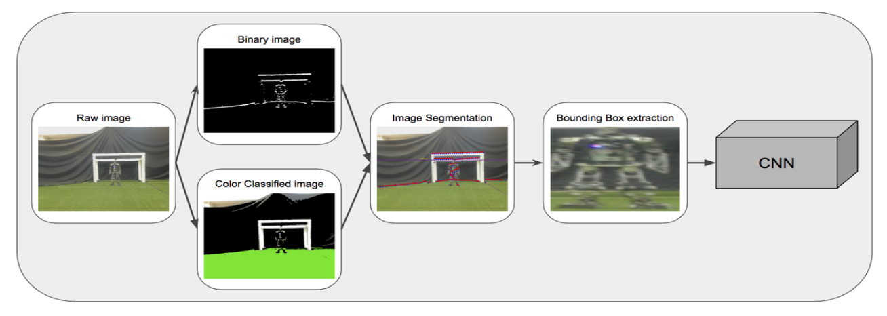

| Name | Mohammad Javadi |
| Date of birth | July 20, 1994 |
| Originally from | Tehra, Iran |
| Languages | Persian, English, Turkish |
| mohammadjv94@gmail.com |
Topics of Interest
- Computer Vision
- Digital Image Processing
- Deep Learning
- Computer Vision Neuro Science
- Intelligent Robotics
B.Sc student in Computer Engineering and Information Technology at Amirkabir University of Technology (Tehran Polytechnic). Diploma in Mathematics and Physics, Allame Helli(2) High School, Tehran, Iran, 2013.
|
Bio-Inspired System Design Laboratory - Winter 2017
|
Humanoid Robot Detection Using Deep Learning: A Speed-Accuracy Trade-off Amirkabir University of Technology, Tehran, Iran We compare several two-stage detection systems based on various CNN's and highlight their speed-accuracy trade off. The approach performs edge based image segmentation in order to reduce the search space and then a CNN validates the detection in the second stage. Paper were published in RoboCup Symposium 2017. (paper Link) Codes are available on Github. 
|
|
Robotics Research Laboratory - Started Oct 2016
|
OpenVRI Amirkabir University of Technology, Tehran, Iran OpenVRI is an open source project. It is a framework for Robotics AI algorithm experiments. It isolates robot's AI algorithms from ROS and provides tools and API for developing Intelligent Robots. Codes are available on Github. |
|
Publications |
Mohammad Javadi
Tehran, Iran
E-mail:
mohammadjv94@gmail.com
mohammad.javadi@aut.ac.ir
Mobile: +98 936 481 9275